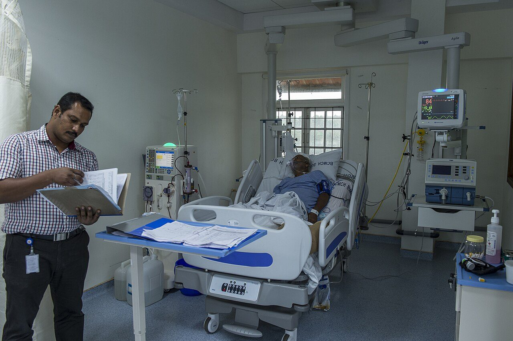

WHO: 5 moments: before patient contact, before aseptic procedure, after body fluid exposure, after patient contact, after contact with the patient's surroundings Soap and water: 40-60 seconds Alcohol rub: 20-30 seconds Hands must be dry after washing When visibly soiled: soap and water